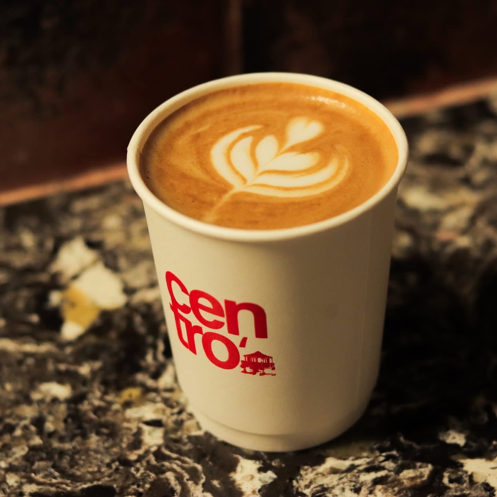
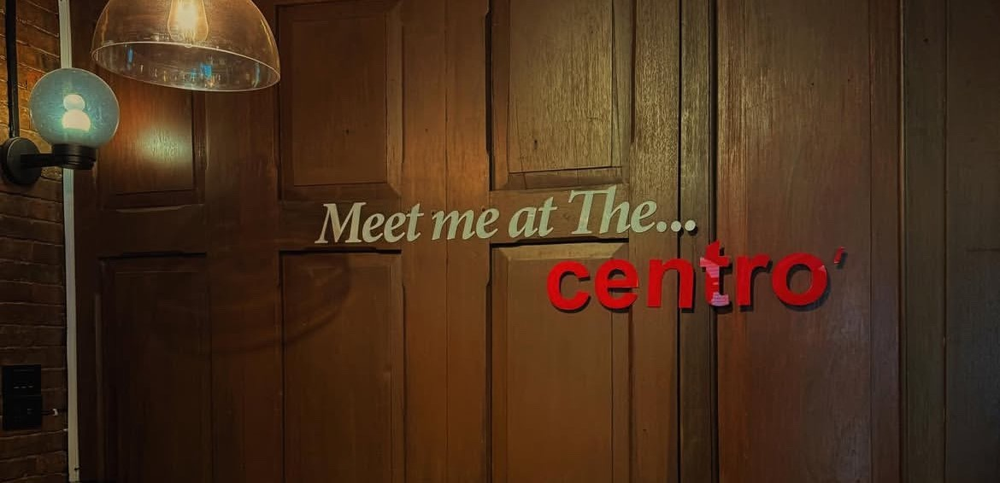
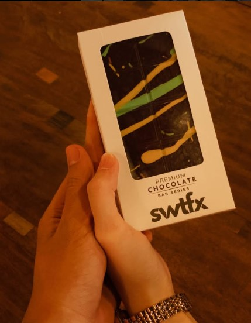
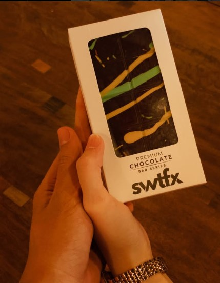
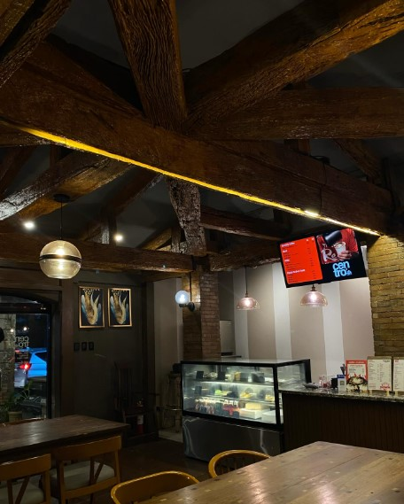
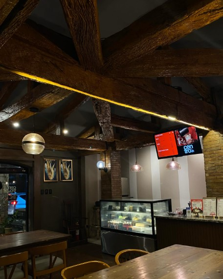
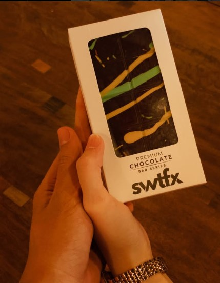
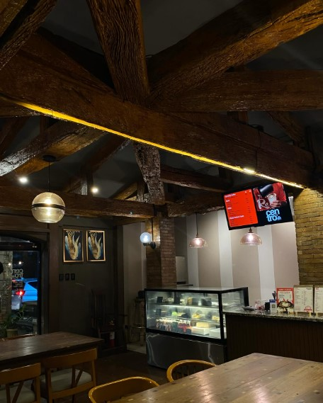

Why Customers Love Centro Café
Whether it's the peaceful vibe, delicious local meals, or unique coffee blends — Centro Café has become a creative and cozy haven for students and professionals alike. Take a look at our recent moments, events, and customer favorites.
Why It's Unique
100% locally sourced coffee beans.
Traditional roasting methods for full flavor.
Special brewing techniques for a smooth, rich cup.
Perfect for students, professionals, and coffee lovers alike.
Recent Photos
Here are the captured highlights that define our space, customers, and coffee culture.




 


 




Recent Videos
Watch our cozy atmosphere and promotions come to life.